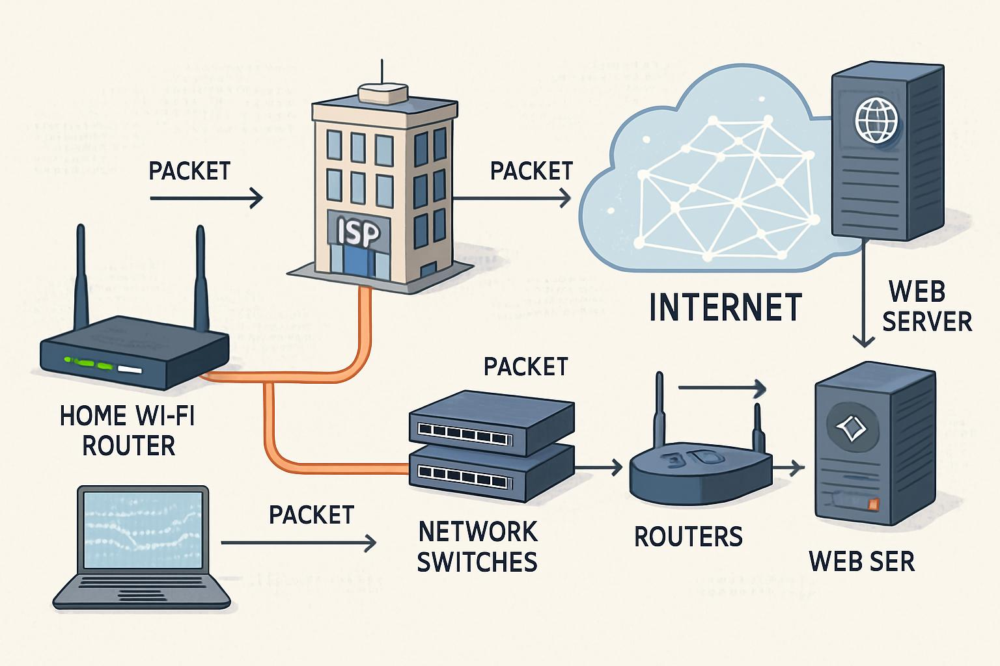

MIS & AI EthicsWebsite OverviewRenata Antelo ViruezOctober 24, 2026Home | AI Usage | Security | About Us Understanding Management Information SystemsMy Original OverviewManagement Information Systems (MIS) are tools and systems that collect, process, store, and distribute data to help manager's decision making. Businesses use technology to process data across daily operations and strategic planning, helping with efficiency and organization. Artificial Intelligence (AI) is important because it is a foundational 21st century technological advancement, it has transformed how we solve problems. It's crucial that we manage the usage of AI and use it ethically to protect human rights and preserve public trust. As of now, organizations face evolving cybersecurity risks driven by AI automation, expanding digital footprint and complex supply chains. In this website, visitors will be able to learn on MIS, AI usage, and AI ethics. AI-Polished OverviewManagement Information Systems (MIS) are tools and systems that collect, process, store, and distribute data to support managerial decision-making. Businesses rely on technology to manage data across daily operations and strategic planning, improving efficiency and organization. Artificial Intelligence (AI) is one of the most significant technological advancements of the 21st century, transforming how individuals and organizations approach problem-solving. However, it is essential to use AI responsibly and ethically to protect human rights and maintain public trust. Today, organizations face evolving cybersecurity threats driven by AI-powered automation, expanding digital footprints, and increasingly complex supply chains. Through this website, visitors will explore the importance of MIS, the responsible use of AI, and the ethical challenges associated with emerging technologies. Learn More About MISArtificial Intelligence | Cybersecurity | Cloud Computing Important MIS Topics
Network Data Transmission |